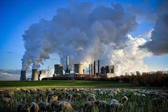
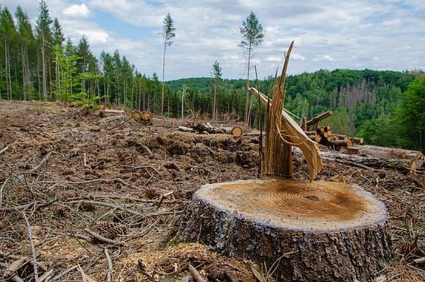
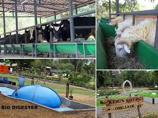
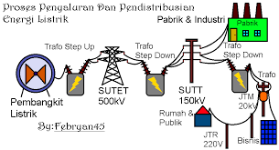
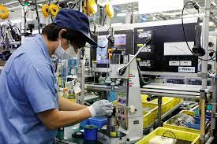
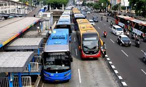
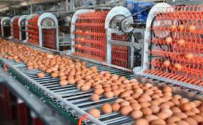

Mengutip laman National Geographic, pemanasan global adalah peningkatan suhu udara di permukaan bumi dalam jangka panjang. Fenomena ini telah berlangsung lama, kisaran sejak satu abad terakhir.
Sebagian ahli menyebut pemanasan global semakin memburuk hingga sekarang. Suhu bumi yang memanas diketahui meningkat secara signifikan akibat pembakaran bahan bakar fosil yang meliputi batu bara, minyak, gas alam. Juga hasil pembakarannya menyebabkan 'efek rumah kaca'.
Efek rumah kaca sendiri adalah kondisi di mana hasil pembakaran bahan bakar fosil yang berupa gas, mencegah suhu panas pergi meninggalkan atmosfer bumi. Suhu panas matahari yang enggan lepas ke angkasa ini menumpuk di atmosfer seiring bergulirnya waktu.
Akibatnya, panas berlebih ini meningkatkan rata-rata suhu global, yang
kemudian dikenal dengan pemanasan global.
Pemanasan Global
terjadi akibat peningkatan suhu udara di permukaan bumi dalam jangka
panjang. Berikut adalah beberapa penyebab pemanasan global
Saat ini, pemanasan global menjadi permasalahan serius yang dihadapi penduduk dunia. Pasalnya, pemanasan global menyebabkan perubahan iklim. Iklim yang berubah ini turut mengubah pola cuaca dan musim tanam di seluruh dunia.
Perubahan iklim juga berakibat pada kenaikan permukaan laut yang disebabkan oleh mencairnya lapisan es dan gletser. Tak hanya itu, masih banyak dampak pemanasan global lain yang melanda dunia. Sehingga bisa dibilang, fenomena ini merupakan ancaman nyata bagi kehidupan manusia di bumi.
10 Penyebab Pemanasan Global
Supaya kita lebih sadar akan dampak global warming, mari ketahui penyebab pemanasan global pada uraian di bawah ini!
| Pembakaran Bahan Bakar Fosil | Sebagaimana penjelasan di atas, bahan bakar fosil yang dibakar menghasilkan gas berupa karbon dioksida yang mencegah suhu panas matahari untuk lepas ke angkasa. Akibatnya, suhu panas berlebih tetap menetap di atmosfer bumi. Bahan bakar fosil diketahui berguna bagi kehidupan manusia sehari-harinya. Di antaranya untuk menyalakan listrik dan penggerak kendaraan. |  |
| Penebangan Pohon | Pepohonan, tumbuhan dan tanaman punya peran penting. Karena mereka menyerap karbon dioksida hasil pembakaran bahan bakar fosil dari udara, dan melepaskan oksigen yang segar. Namun manusia justru banyak menebang pohon di area hutan untuk memanfaatkan lahannya sebagai pertaniaan, pembangunan kota hingga berbagai infrastrukturPadahal, saat tumbuhan dan pohon ditebang, gas karbon yang tersimpan di dalamnya kembali lepas ke atmosfer dan berkontribusi terhadap pemanasan global. |  |
| Peternakan dan pertanian | Hewan ternak seperti sapi, kambing dan domba mengeluarkan kotoran yang menghasilkan gas metana, penyumbang efek rumah kaca. Dengan begitu, peternakan dalam jumlah besar berkontribusi besar terhadap pemanasan global. |  |
| Aliran tenaga listrik | Sebagian besar listrik masih dihasilkan dari pembakaran bahan bakar fosil, yakni batu bara, minyak atau gas. Pembakaran ini menghasilkan karbon dioksida dan dinitrogen oksida yang mampu menangkap panas matahari penyebab pemanasan global. |  |
| Industri | Industri memerlukan energi untuk pembuatan barang-barang seperti semen, besi, baja, elektronik, plastik, pakaian, dan lainnya. Energi ini dihasilkan dari pembakaran bahan bakar fosil yang kita ketahui akan menimbulkan emisi. |  |
| Pertambangan | Sama seperti industri, pertambangan juga memerlukan bahan bakar fosil untuk menggerakkan mesin-mesinnya. Demikian pembakaran ini melepaskan gas penyumbang pemanasan global. |  |
| Penggunaan Transportasi | Masih banyak orang yang menggunakan kendaraan berbahan bakar fosil seperti minyak bumi, dan inilah penyebab pemanasan global. Disebutkan, transportasi menjadi penyumbang utama emisi karbon dioksida yang merupakan gas rumah kaca. |  |
| Produksi Makanan Berlebih | Proses pembuatan makanan menghasilkan gas seperti karbon dioksida dan metana. Hal ini karena makanan yang dibuat adalah hasil dari pertanian, peternakan, pembukaan lahan hingga penggunaan energi untuk menjalankan peralatan dan mesin penunjangnya.Selain itu, emisi rumah kaca juga berasal dari pengemasan dan pendistribusian makanan itu sendiri. |  |
| Mendirikan Bangunan Besar-besaran | Bangunan rumah, kantor, maupun lainnya mengkonsumsi banyak energi listrik. Sedangkan listrik masih banyak dihasilkan dari pembakaran bahan bakar fosil, yang turut menyumbang emisi gas rumah kaca dalam jumlah besar. | |
| Penggunaan Energi Berlebih | Tentu saja setiap manusia menggunakan berbagai peralatan dalam kesehariannya, seperti AC (air conditioner), pemanas ruangan, komputer, televisi, dan lainnya. Begitu juga manusia mengkonsumsi makanan, minuman, barang-barang, hingga pakaian. Semua itu tentu dibuat melalui proses yang panjang, dengan berbagai peralatan yang sebagian besar digerakkan oleh pembakaran bahan bakar fosil. |